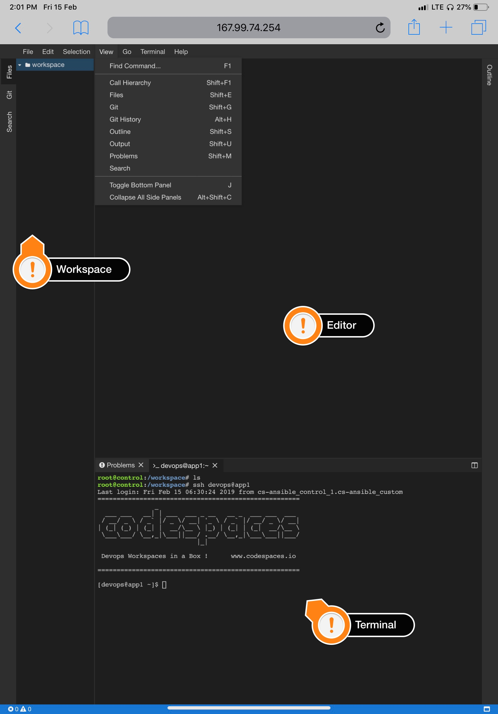

Codespaces
What is Codespaces
Codespaces is a tool created by School of Devops to simplify your learning environment setup and offers an IDE with integrated workspace, editor, terminal and nodes.
Following digram is an example of a codespaces environment.

Setting up Codespaces
The easiest way to setup codespaces environment is by installing docker on your local system or even a remote server. Following section would point you to docker installation instructions.
Docker Installation
We assume that you have installed Docker-Engine and Docker-Compose in your machine. If not, please follow the below mentioned references to get started with Docker and Docker-Compose
- Installing Docker Desktop on Windows
- Installing Docker Desktop on Mac
- Docker-Engine Installation Guides for Linux
- Docker-Compose Installation Guides
Setup Codespaces Repo
Clone or download the codespaces-io repository by using either of the following commands
Option 1 : Git Clone
to clone using git,
git clone https://github.com/codespaces-io/codespaces.git
cd codespaces
Option 2 : Zip File Download dont run this if cloned using above instructions
to download a zip file
wget https://github.com/codespaces-io/codespaces/archive/master.zip
unzip master.zip
cd codespaces-master
Once cloned/unzipped, make sure you have change into the codespaces directory ( codespaces/codespaces-master)